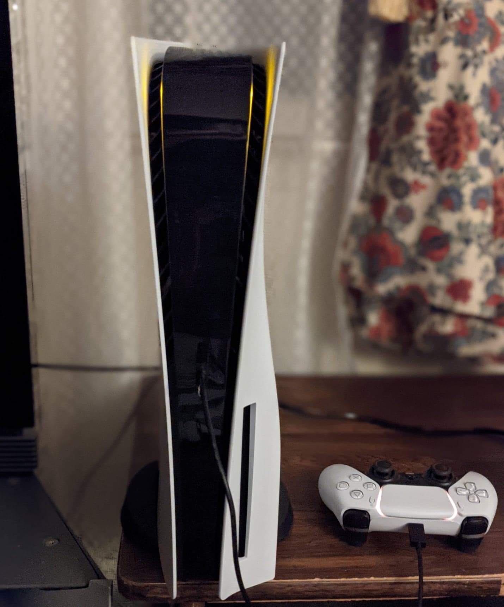

The Autopsy Report · Device #019
The PlayStation 5
The tallest console of its generation — and the one whose wireless paperwork is the most misunderstood. We haven't opened one yet, so this report is built from the public record: the FCC's module filings, independent teardowns, and the AMD silicon inside.
What is this thing?
The PlayStation 5 is Sony's ninth-generation console, launched November 12, 2020. Two versions at launch: the disc model (CFI-1015A) and the Digital Edition (CFI-1015B, no disc drive). Inside: an AMD SoC pairing Zen 2 CPU cores with RDNA 2 graphics, 16 GB of GDDR6 memory, and a custom 825 GB SSD whose speed Sony made the centerpiece of the design. Wikipedia
This report covers CFI-1000 through CFI-2000 (launch through the 2023 slim redesign). The paperwork needs care: AK8M19DFR1 is the FCC ID of the J20H100 Wi-Fi 6 / Bluetooth 5.1 module inside the console — a contained module ID, not the whole console's ID. Treating it as the console's ID is the single most common error in PS5 write-ups, and we won't repeat it. FCC module exhibit
Not yet on our bench
No unit of ours has been opened for this report. Everything below comes from public records: the FCC module filings, independent teardowns, and published specifications. The public-record facts are as complete as we could make them; what awaits the bench is everything that requires our hands on our hardware — our own photos, our own measurements, and confirmation of exactly which CFI revision our future unit is. When a PS5 lands on the bench, the thin spots below are exactly where we'll start.
A short history
- November 12, 2020Sony launches the PS5 (CFI-1000) amid a pandemic-era chip shortage. Demand outruns supply for nearly two years; restocks become news events. Wikipedia
- 2020The J20H100 wireless module inside the launch console clears the FCC under AK8M19DFR1 — Wi-Fi 6 and Bluetooth 5.1 documented in the module's own test reports and internal photos. FCC module exhibit
- October 2020Sony publishes its own official teardown video — liquid metal thermal interface and all — and independent teardowns (iFixit) document the board's chip set. Independent teardown
- 2022The CFI-1200 revision shrinks the heatsink and sips less power — same performance, lighter box. Wikipedia
- 2023The CFI-2000 "slim" redesign: smaller chassis, detachable disc drive, 1 TB storage. Wikipedia
The outside
Two white fins flanking a black core — the most sculptural console Sony has ever made, and too tall for most TV stands. The 2023 slim keeps the look at two-thirds the volume. What the photo can't show: the removable side panels, or the liquid-metal thermal compound Sony used between the SoC and the heatsink — a first for a game console.

The board
The PS5's main board is dominated by the AMD SoC under a large heatsink fed by liquid metal, ringed by eight GDDR6 memory packages (16 GB total). A separate CXD90062GG SSD controller drives the custom flash storage, and the J20H100 wireless module — the AK8M19DFR1 grantee — sits as its own shielded assembly. Independent teardown The exact CFI revision, board date codes, and component mix of our future unit are unknown until we open one ourselves.
Under the microscope: the chips
What's on the board, what each part does, and how sure we are. Confirmed means primary evidence only — an FCC exhibit, a manufacturer manual or datasheet, or an official announcement. Likely means corroborated secondary or public-teardown evidence. Markings below come from public teardowns of launch-series boards; the CFI-1200 and slim boards differ.
| Chip | What it does | How we know | Dig deeper |
|---|---|---|---|
| AMD CXD90060GG Zen 2 CPU + RDNA 2 GPU SoC |
The whole system on one chip: 8 Zen 2 CPU cores and RDNA 2 graphics (10.28 TFLOPS). | Likely Marking documented in public teardowns; architecture per the published specs. | Independent teardown |
| Sony CXD90062GG | Custom SSD controller — the chip behind the PS5's famously fast storage. | Likely Marking documented in public teardowns. | Independent teardown |
| Micron MT61K512M32KPA-14:B ×8 GDDR6, 16 GB total |
System memory — eight packages shared between CPU and graphics. | Likely Marking documented in public teardowns; vendor mix varies by revision. | Independent teardown |
| Kioxia TH58LJT0T24BA4M BiCS flash |
The SSD's flash storage, driven by the custom controller. | Likely Marking documented in public teardowns. | Independent teardown |
| SK Hynix 512 MB DDR4 | Cache memory for the SSD controller. | Likely Marking documented in public teardowns. | Independent teardown |
| J20H100 wireless module FCC ID AK8M19DFR1 — module ID, not console ID |
Wi-Fi 6 and Bluetooth 5.1 radio, certified as its own module. | Confirmed The FCC module exhibit names the J20H100 and its ID directly. | FCC module exhibit |
One honest limit: the FCC's own module photos show the J20H100's shielding, not readable chip markings — we don't claim module chip IDs the exhibits don't show. The custom AMD and Sony silicon has no public datasheets. Awaiting the bench: our unit's exact CFI revision and its component mix.
The government's file on this box
Here's the part most write-ups get wrong. AK8M19DFR1 is the FCC ID of the J20H100 wireless module — a small shielded board inside the PS5 carrying the Wi-Fi 6 and Bluetooth 5.1 radios. It is a contained module ID: the module was certified on its own, with its own test reports and internal photos, and then installed in the console. It is not the PlayStation 5's whole-product ID, and citing it as "the PS5's FCC ID" misdescribes the filing. FCC module exhibit
The module exhibits are nonetheless valuable: they document the radios' test reports and show the module's construction. What they don't give us is readable chip markings — the photos show shielding, not silicon. We report that limit instead of inventing around it.
Debug and service modes
Sony publishes an official Safe Mode for the PS5 — the legitimate, manufacturer-documented recovery path. The procedure, from PlayStation's own support pages: power the console fully off, then press and hold the power button — release it after the second beep (about seven seconds) — and connect a controller with a USB cable. From the Safe Mode menu you can restart, change video output, update or reinstall the system software, clear the cache and rebuild the database, reset the console, and — as the last resort — reset it and reinstall the system software. PlayStation support This is a legitimate, manufacturer-published recovery procedure — the kind of thing we document, not the kind we defeat. We haven't tested it on our own hardware, because we don't have any yet.
What public records show
The public record gives us the PS5's full biography: launch and revision dates, the AMD Zen 2 / RDNA 2 architecture, the 16 GB GDDR6 and custom-SSD configuration, the wireless module's FCC exhibits, and an official Safe Mode procedure. What it does not give us is anything that only exists inside a specific unit — CFI revision, board date codes, memory vendor mix, or the module's internal chip markings. That's the bench's job.
What we haven't done
- We haven't opened, photographed, or measured a PS5 of our own.
- We haven't confirmed which CFI revision our future unit will be.
- We haven't tested Safe Mode on our own hardware.
- We haven't verified the chip markings against a physical board.
- The photo above is a freely licensed stock image, credited in full — not our hardware.
By the numbers
- Model range: CFI-1000 (launch) through CFI-2000 (slim); Digital Edition variants
- FCC: AK8M19DFR1 is the J20H100 module's ID (Wi-Fi 6 / Bluetooth 5.1) — not the console's whole-product ID
- SoC: AMD CXD90060GG — 8-core Zen 2 CPU + RDNA 2 GPU (10.28 TFLOPS)
- Memory: 16 GB GDDR6 (8 packages)
- Storage: 825 GB custom SSD (launch); 1 TB (slim)
- Launched: November 12, 2020
Words to know
Every term this page uses, in plain English. No prior knowledge required.
- Zen 2 / RDNA 2
- AMD's CPU and graphics architectures of 2019–2020 — the same families in gaming PCs of the era, customized for Sony.
- GDDR6
- The current generation (at launch) of graphics memory — fast RAM shared between the CPU and GPU.
- Contained module ID
- An FCC ID that belongs to a wireless module inside a product, not to the product itself. AK8M19DFR1 is one of these.
- Safe Mode
- Sony's official recovery screen: hold power to the second beep, then repair, update, or reset the console.
- Liquid metal
- The thermal compound Sony used between the PS5's SoC and heatsink — more efficient than paste, and a first for consoles.
- FCC ID
- The ID the FCC assigns to each approved wireless product or module. Punch it into fccid.io and the whole public filing comes up.
Sources & confidence
- AK8M19DFR1 as the J20H100 module's ID (Wi-Fi 6 / Bluetooth 5.1), with test reports and module photos: the FCC module exhibits. High confidence.
- Chip markings (AMD CXD90060GG, CXD90062GG, Micron GDDR6, Kioxia flash, Hynix DDR4): public teardowns with photographs. Medium-high confidence; revisions differ.
- Launch/revision dates, SoC architecture, memory/storage configuration: published technical overviews. High confidence in the facts, medium in any single source.
- Safe Mode procedure: PlayStation's official support pages. High confidence in the procedure's existence; untested by us.
- Module chip markings: unreadable in the FCC exhibits — stated as a limit, not a gap we filled.
- Anything not listed here is unknown until the bench says otherwise. We'll say so, out loud, when that's the case.
We publish no firmware, serials, keys, or private data. This report uses only public records plus a freely licensed stock photo.
Legal note. BareBoard is an educational project. We don't publish, host, or distribute firmware, keys, passwords, or credentials. Product names and trademarks belong to their respective owners and appear here only to identify the hardware. If you believe anything here infringes your rights, contact us and we'll address it promptly.